加速推理是一个诊断、实验、测量的循环：每次改进都可能暴露新瓶颈，每次实验都会改变下一步值得尝试的方向。Decagon搭建的AutoResearch让智能体跑这个循环：调查服务栈、对生产流量回放做实验、在已有结论上继续挖掘收益。
推理是最先交给AutoResearch的方向，原因有二：搜索空间大且因端点而异，十几个生产模型端点各自架构、工作负载、延迟要求与硬件配置不同，优化相互作用又相互叠加，人工逐个端点反复实验越来越耗时；推理是可验证任务，同一工作负载回放并测延迟-吞吐负载曲线即可检验改动，在给定延迟SLA内每GPU每秒成功请求数就是智能体接收反馈、验证改进、指导下一步实验的坚实起点。
给定已有模型端点，AutoResearch系统先测量现有部署、诊断瓶颈、提出改动、在GPU上跑实验，形成连续自我改进的循环。搜索范围覆盖服务参数、GPU布局、推测解码与推理引擎补丁；找到改进后验证结果，再从新基线继续。
循环跑在Devin Cloud上，因为推理研究跨越长时间实验与反复分析，持久云会话与预配置环境让编排器跨仓库协调工作，子智能体并行调查聚焦问题；Modal提供GPU训练、画像与回放运行的执行环境。
设计围绕两条指导原则：搭建高保真回放环境以反映生产；组织研究循环以向全局最优收敛。
评估优化靠在受控负载与生产derived流量模式下回放生产请求。回放既要复现端点处理什么，也要复现请求何时到达。
生产日志脱敏后重建请求，保留消息结构、系统提示词、工具定义、输出模式与生成设置。脱敏会改变token长度与共享前缀，因此要核查回放是否仍代表生产，包括影响执行与缓存复用的属性。
容量测试：按递增到达率回放请求，每个速率保持数分钟并随机化请求间隔，得到延迟-吞吐负载曲线作为基线，标出延迟与错误界限内端点维持的最高测试速率。以一个基于后训练Gemma 4 26B-A4B的端点为例：
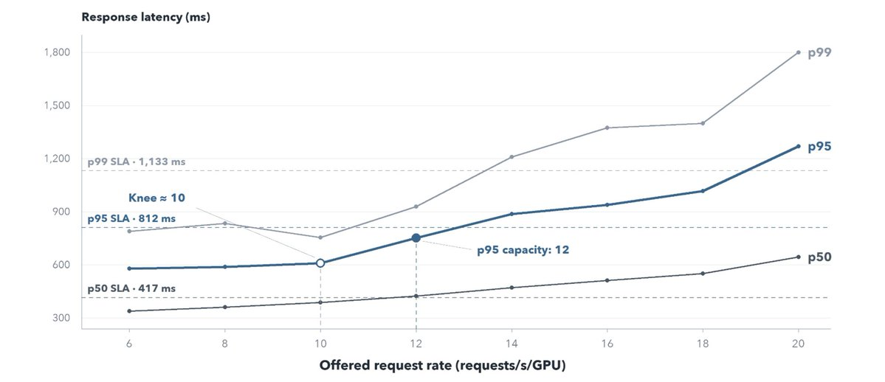
生产形态测试：把生产请求计数或时间戳转成连续时段的到达率，复现突发、持续繁忙与较清闲时段。结合自动扩缩容，还能检验部署在突发时加容量是否够快、需求回落时是否释放GPU；受控合成尖峰帮助隔离特定的扩缩容行为。
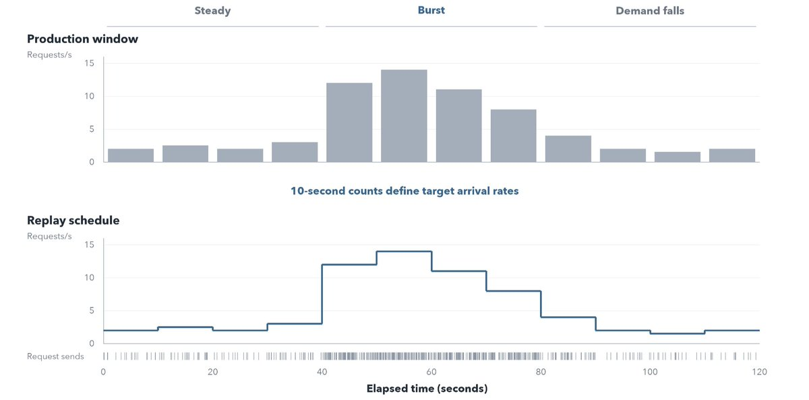
Rust运行器按开环调度发请求，不等earlier响应完成。服务器变慢时流量继续到达，暴露负载下的排队。
基线回放对照生产验证：比较token长度分布、缓存输入token占比、请求时序与并发。只匹配平均请求速率不够，请求长度、前缀复用或突发性的差异会改变瓶颈并夸大优化收益。
容量扫描在引擎预热与每次负载步前重置前缀缓存的条件下测可持续流量；生产形态运行检验容量收益是否在真实需求下减少GPU用量，允许缓存状态演化并捕捉扩缩容延迟。
候选与基线用同一请求池、到达调度与延迟要求。测试改动前，基线在相同条件下多次回放，测出延迟与服务容量的自然波动，确立噪声底线：候选的改进必须超过波动并在重复运行中站得住才算收益。
负载曲线显示性能在何处恶化；多种诊断方法更精细地解释原因并指出下一步测试什么。
智能体先查端点服务什么、在哪里吃力：请求日志揭示长提示词、短响应或重复前缀等模式，生产指标显示延迟何时上升、部署如何扩缩；再查服务配置，找出能解释这些行为的设置或执行路径。
GPU画像在短窗口内记录CPU活动与GPU内核执行，同时呈现工作耗时与GPU等待。画像分两层看：一是时间拆解，找出注意力或混合专家计算等昂贵操作；二是执行时间线，呈现这些操作如何相互作用：预填充是否打断解码、CPU工作是否与GPU执行重叠、内核启动间隔是否让GPU空闲。
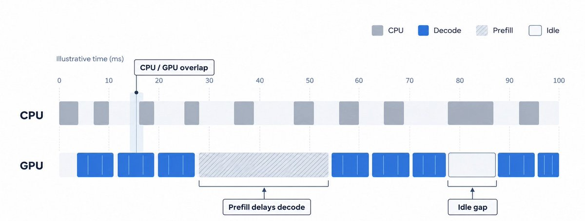
诊断工作负载一次只改流量一个属性来隔离疑似瓶颈：固定输出长度改提示词长度、比较共享与独立前缀、在解码进行中引入长提示词。智能体遇到不同工作负载、架构与预填充/解码模式时扩充这套诊断测试；每项可复用测试成为配方，供未来战役用于性能特征相似的端点。
| 受控变化 | 探测目标 |
|---|---|
| 提示词更长，输出长度固定 | 预填充成本 |
| 输出更长，提示词长度固定 | 解码成本 |
| 共享前缀与独立前缀 | 缓存效果 |
| 生成过程中到达长提示词 | 预填充与解码干扰 |
| 并发请求更多 | 准入与内存限制 |
| 突发到达与平稳到达 | 排队与扩缩容行为 |
AutoResearch循环用编排智能体协调实验并派生子智能体：父级搭建回放池、跑诊断测试，再提出N个深入调查方向，启动N个子智能体会话。
子智能体改善上下文管理：详细调查留在各自会话里，编排器专注战役级决策；摘要与回链让编排器在需要时取回深层推理。
并行探索竞争假说也因此成为可能：调度、内存与推测解码调查同时推进，各自带着聚焦问题与待查证据。每个子智能体在独立会话运行，启动时编排器给定明确上下文：战役与实验标识、回放池标识、延迟要求、相关基线测量、以往结论与一个研究问题。
子智能体阅读相关源码、文档、画像与以往实验，返回四部分提案：
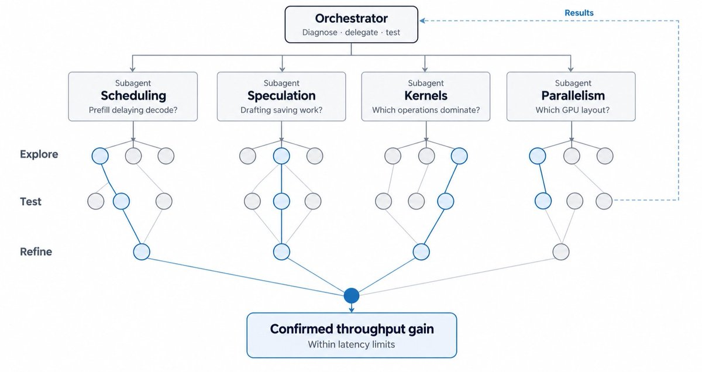
子智能体可以提议一串实验，含对照与后续测试；编排器决定这些实验如何融入更大战役，通过共享线束执行，结果成为下一次调查的上下文。
这种分工兼顾广度与深度：多个子智能体调查不同机制的同时，父级跑已有的实验；有前景的方向得到更深调查，重复中性结果促使战役转向另一实验臂。
Gemma 4 26B-A4B端点上，智能体用GPU画像与回放测量定出四个调查方向：
| 子智能体调查方向 | 候选实验 |
|---|---|
| 调度与缓存 | 扫描预填充块大小与预填充-解码间隔，再测前缀缓存复用是否改变最优调度配置 |
| 推测解码与起草器训练 | 微调兼容起草器，比较支持的Draft-OPD与D-PACE训练配方，联合调优起草深度与验证设置 |
| 内核与量化 | 画像昂贵内核，测试CUDA图捕获规模与覆盖，评估支持的权重与KV缓存精度变化；画像暴露CPU开销或GPU空闲处调查引擎补丁 |
| 并行与准入 | 比较张量并行与数据并行布局，测试每GPU多服务实例，扫描并发上限以区分准入限制与内存/计算约束 |
只有主编排器跑战役的实验：通过通用线束管理部署、预热、流量生成、测量与评分，在可用GPU容量内调度并发运行。
编排器还检验结果是否为有效证据：新配置对照回放池跑负载测试与自动扩缩容测试，看负载曲线如何随优化移动。
每项完成实验得到一个结论：
| 结论 | 含义 |
|---|---|
| 更好 | 容量改进超出基线噪声 |
| 相同 | 实验未确立有意义的改进 |
| 更差 | 性能退化或必需约束失败 |
| 无效 | 运行无法支撑比较，需要修正 |
区分无损收益（如调度或内存管理改动，保持模型输出）与有损收益（如权重或KV缓存量化，可能影响输出质量）。有前景的结果经过重复测试，再由人工评审性能-质量权衡并决定合并哪些改动。
获胜后循环继续探索改进，同时继续测试替代服务策略，降低过早陷入局部最优的风险。子智能体探索竞争解释，收益停滞时编排器重访替代方案，每项确认改进触发新的诊断；对照与消融检验早期选择是否仍然有效，降低陷入局部最优的风险。
候选满足确认标准后成为新的工作基线（原始基线仍作为战役总收益的参照），智能体在新的服务极限处重复诊断，重新审视瓶颈所在。
进一步优化叠加在新基线之上以获得更大的吞吐收益；但独立测得的两项改进可能竞争同一资源，组合候选需要对照与消融来确立各自的贡献。
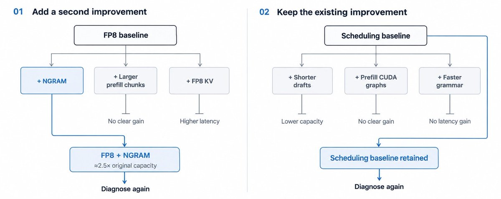
一个方向的重复实验不再产生可测收益时，编排器转向另一假说。战役在到达截止时间或已有结论支撑不起更多实验时结束，保存最优确认配置与开放问题，供未来工作接手。
系统把决策与评估分开：外层研究循环决定调查什么，编排器诊断瓶颈、委派聚焦问题给子智能体、从提案中选实验；内层评估循环在同一工作负载与延迟要求下测试每个候选，加大负载以测量配置如何改变服务容量。
每个结果都影响下一次决策：不成功的实验修正或否定假说，有前景的进入重复测试、正确性检查与生产形态回放；确认的改进成为新的工作基线，触发新服务极限处的又一次诊断。共享记忆把结论带到各次迭代与端点之间，生产部署仍须人工审核。
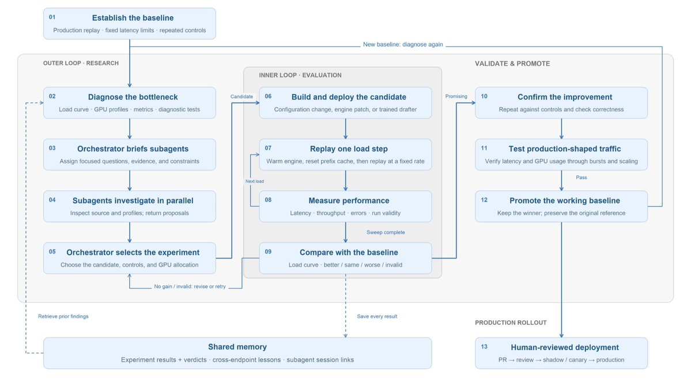
起草器优化是AutoResearch内的专门阶段：为微调后的目标模型适配起草器，并针对生产工作负载专门化。用同一回放线束与延迟要求验证训练改进是否转化为更高的吞吐与接受长度。
这是一组设计决策：起草架构、学习的工作负载、训练轨迹如何生成、预测误差如何加权。每个目标继承已有最佳验证配方，只改动特定假说支持的决策。
可选起点包括MTP头与DFlash、DFlash2、EAGLE、DSpark等起草架构。智能体用已有实验结果、公开证据与简短服务检查选出支撑最强的起点，尽可能适配已有起草器，并锁定检查点、配方与代码版本。
Gemma端点上，已有DFlash2起草器的服务接受长度比生产MTP头高约17%，是有前景的适配起点；进一步训练又比起始起草器提升14%。把生产起草器与起始DFlash2检查点作为两个独立基线，可以看清多少改进来自额外训练。
智能体搭建反映工作负载的训练混合：任务、提示词与输出长度、语言、对话阶段、工具使用与结构化输出。公开数据集提供提示词，答案由锁定的目标重新生成；合成对话填补覆盖缺口。
困难样本可以获得更高权重，难度按起草器预测目标输出的差程度衡量：低接受率识别出挑战性请求类型，训练rollout中的拒绝点定位起草器与目标不一致的token序列。循环可以在训练中调整数据源比例以弥补弱点，同时保持广泛的工作负载覆盖。
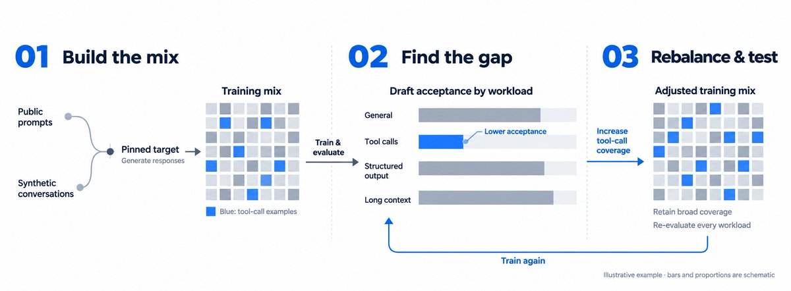
智能体用rollout实验检验从起草器自身错误中学习是否提升服务性能：早期token位置接受率下降，或离线改进未能带入服务时，可以在目标固定不变的情况下改变训练样本的生成方式。
一组GPU让起草器与目标模型并排运行，收集接受与拒绝预测的样本；另一组在这些样本上训练，优先处理目标拒绝起草器提议的位置。训练推进时，生成工作器频繁加载新检查点，让后续样本反映起草器不断变化的行为。
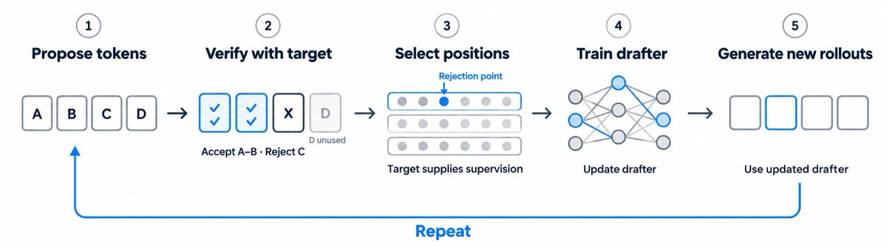
系统记录每个样本出自哪个检查点，另一轮在策略训练需要新生成的rollout。训练后智能体检查目标接受问题是否改善，再用共享回放线束测试有前景的检查点能否带来吞吐收益。
智能体从最佳验证配方出发，用诊断决定改目标、重平衡各部分，还是在调查数据时保持目标固定。比较训练损失与各工作负载、各token位置的接受率：如果损失改善但留出接受率没有改善，就调查改训练数据还是调整损失对预测误差的强调。
架构专属损失提供更有针对性的证据：DFlash2训练路径把候选覆盖失败与选择器错误分开。正确token不在候选集里时，加强选择器训练无法挽回；正确token在集里却反复被忽略时，改选择器损失权重就是合理的实验。
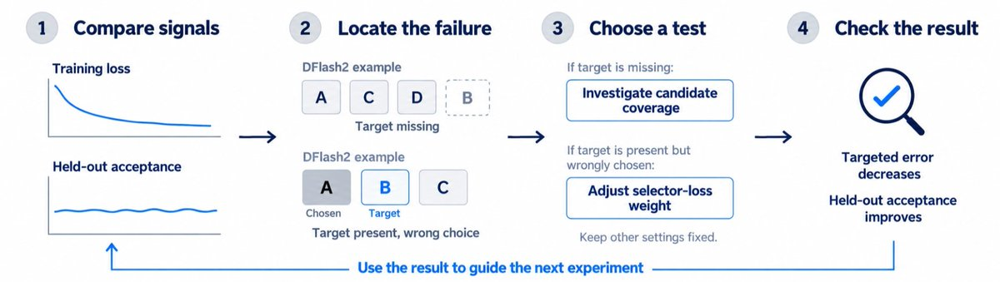
循环决定哪些rollout位置进入训练、每个误差对损失的贡献多大。优先处理拒绝点，再从其他验证边界与已评分目标token中补足剩余位置；既聚焦已观察到的错误，也保留失败之外的样本。
按token位置的接受率指导加权实验：早期拒绝导致后续提议无法使用时，可以测试D-PACE，用起草器预测概率给影响接受长度的误差更高权重。这些权重随起草器变化而自适应，而非按位置固定安排。
Gemma战役中智能体怀疑每条rollout提取的训练位置太少，于是把每序列采样数翻倍，检验更密集监督是否改善学习；留出接受率提升，实验最终保留了更高的采样密度。
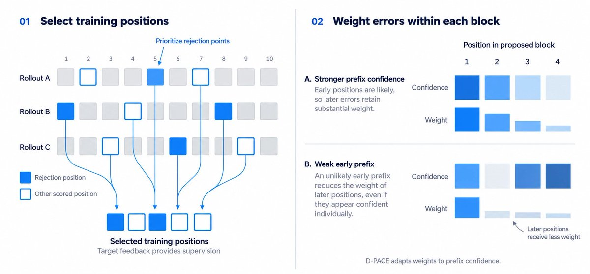
在有支撑的情况下，智能体先固定rollout生成测试加权变化，再把有前景的变化与Draft-OPD组合。单独与组合实验分别显示改进来自训练样本、加权还是二者的相互作用。
训练设置按学习曲线形态与接受诊断选定。智能体查看训练与验证损失、梯度范数、按位置的接受率与逐层权重变化，再决定训练更久、改数据还是改模型。
| 观察 | 调查方向 |
|---|---|
| 梯度范数不稳定 | 学习率与预热 |
| 训练表现强但留出接受率弱 | 数据覆盖或泛化 |
| 前几个起草位置接受率骤降 | Rollout对齐或目标 |
| 早期位置强但后期位置恶化 | 位置加权或起草深度 |
这些信号与纯推理优化流中的诊断工作负载相似。循环先做短训练run判断改动是否有前景，再投入更长的训练。
检查点筛选结合接受指标与训练和验证损失、梯度范数、起草与验证成本。
还考察块内拒绝发生的位置与接受率如何随工作负载变化。智能体把这些测量与另外三组信号结合：
检查点反复评估，改进超出基线波动的候选晋级。剩下的问题是更好的预测能否改善端点：如果预填充主导延迟，或起草与验证已耗尽潜在节省，进一步的接受收益价值有限；智能体随即把调查转向服务成本，再决定是否投入更多训练。
每个战役都可能涉及并行调查、GPU部署与昂贵的训练运行。护栏控制资源使用、在全面启动前发现失败、保持成功标准一致：
每个战役都为持久的版本控制文件中的共享研究历史做贡献：Markdown页面保存端点摘要，结构化实验记录捕捉单项结果，可复用配方描述测试有前景技术的方法。编排器携带相关结论、经验与开放问题，子智能体通过链接历史获得更深推理。
共享记忆分两层：端点内，记忆防止重复工作，战役从端点的确认改进、以往实验与未决问题出发；测试候选前先查同一改动是否已在该GPU数上产生中性或负面结果。跨端点，记忆迁移解释：每项实验记录针对的瓶颈、测试的技术与结果成立的条件（模型、硬件、工作负载、引擎版本）；新战役诊断出瓶颈后，系统呈现瓶颈相同的其他端点的结论。跨端点视图也保留分歧：如果推测解码对一些端点有帮助、对另一端点有害，系统保留两种结果与支撑证据；分歧把下一次调查引向解释差异的条件（如解码占比、起草开销或流量形态），而不是把条件性结果变成通用建议。
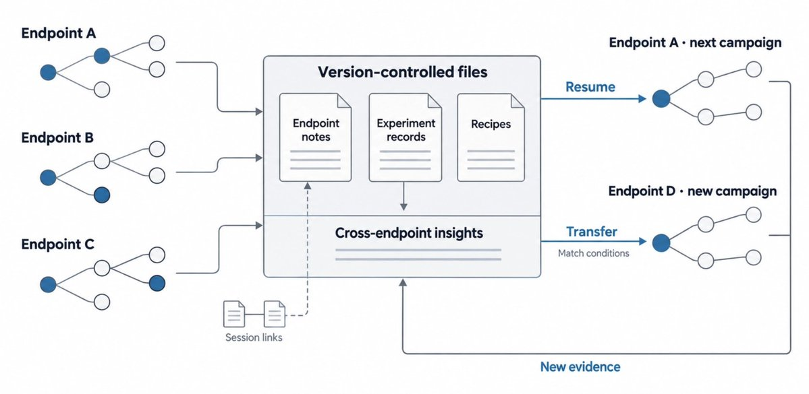
在反复服务实验中，AutoResearch循环通过量化、内核选择、调度、GPU执行、拓扑与推测解码找到收益；收益取决于每个端点的瓶颈，有的来自降低执行开销，有的来自更便宜的计算或每次目标模型前向生成更多token。
Gemma部署上，AutoResearch同时改进服务配置与起草器训练：预填充-解码间隔调优让回放容量提升最高65%，为select-playbook端点适配DFlash2起草器让吞吐比生产起草器提升34%。
下表按每GPU每秒请求数报告收益，均在各端点生产延迟要求内；每项收益相对该实验基线配置（SGLang默认值或当前调优生产配置）测量；多项优化组合时，报告最终配置相对基线的收益。结果跨多个生产端点，各自模型、工作负载、硬件与延迟要求不同；每行报告相对战役开始时生产配置的吞吐收益。
| 测试配置 | 实测吞吐收益 |
|---|---|
| FP8权重+ NGRAM推测解码 | 2.50倍 |
| CUDA图、语法处理、调度开销与执行布局组合引擎补丁 | 1.99倍 |
| 微调MTP起草头 + 分块预填充与起草深度调优 | 1.41倍 |
| 预填充期间额外循环状态缓存 + 缓存容量调优 | 1.19倍 |
| MXFP8 + EAGLE3推测解码 | 1.43倍 |
| DeepGEMM FP8预填充 + 解码重叠调度 + FP8 KV缓存 | 1.20倍 |
| 双引擎MPS布局上的FP8 KV缓存 | 1.13倍 |
| 现有MTP头拒绝采样，不训练 | 1.05倍 |
| 微调MTP起草头 | 1.45倍 |
| 训练DFlash2起草器，相对生产起草器 | 1.09倍 |
| 预填充-解码间隔调优 | 1.65倍 |
| Draft-OPD训练的DFlash2起草器适配，相对生产起草器 | 1.34倍 |
更大的赌注是：具备强大实验环境、能接触实现、有可靠反馈时，智能体可以承担越来越有雄心的性能研究。战役可以从已有服务设置开始，证据支持更深改动时走向引擎补丁或新的推测解码训练配方；共享记忆保存早期想法奏效的条件、缩小搜索的失败与尚未解决的问题。
循环目前由人工启动，未来会转为智能体启动：模型更新、工作负载变化或延迟变化触发另一次调查。证据积累后，系统会开始提出更新颖的改动，包括超出最初给定配置的训练配方。
最终，给智能体合适的实验环境可以带来快速而强劲的结果，服务于Decagon智能工厂的建设。
参考：https://x.com/DecagonAI/status/2115511110120120437